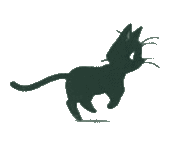

july 6th 2025: i burst at the seams with want but in the end my adversity to effort and caring confine me to my self induced isolation
my heart hurts with the desire to be more. i want to go out while the sun is still in the sky and read books under the sun. i want to fall in love and be loved. i feel my soul and my atoms rot trapped in the shell of myself while i waste away within these walls. i cant bring myself to be up before noon. one day, when my bones are brittle and my health is poor, i will look back at my most formative years of my youth and wonder what held us back from our one chance of truely living.

july 7th 2025: healing is not linear
although on my surface coat i am protected by hate and anger, i hold tenderness within me for the things i love. while others may put on a show to be regarded by others as something, i hold everything close to my heart. this could be understood as a lack of personality or empathy, but not everything must be a performace. sometimes it is okay to make moves for yourself and not for peer validation. especially when the peers are not worth the time of day to care for. they might not understand you truely, but those who put the time in to break down your walls and see past what personas may be in the way will know
july 15th 2025: what is even going on anymore!!!
i think i am plagued with caring too much. but at the same time i dont care enough.... on sat i am getting another tattoo but im hesitant to get it in a place that is visible to others.. i think i am scared of coming across as someone who is "tatted"... the ideals of immigrant asian parents and their distain towards anything that comes across as unbecoming or unprofessional still linger at the back of my mind. inside of you are two wolves. one wants to embrace individuality and things that matter to themself and the other wolf is chinese. the tattoo i am getting comes across very corny and emo and although it has special meaning to me, others might get a different idea from it. but why does it matter... its my tattoo... but it DOES MATTER!!! MY CHINESE WOLF IS WINNING!!
july 19th 2025: shame is not real embarassment is not real its okay its okay
personally im very happy with my tattoo.. its exactly what i envisioned for myself teehee.. i am aware. it comes accross very emo and when i showed my sister she definitely thought it was weird. to me, i read it in a way that embodies growth, self-discovery and rebirth !! in the game, the main character mae struggles with depression and derealization that leads to her developing severe apathy and a mindset to life that has her questioning if anything is even worth it anymore. i think for a long time i've lived the life of someone bound by the title of 'chill' and 'easygoing'. overtime i've stopped caring about a lot of things that used to be important to me. ive let a lot of things happen to myself that i shouldnt have with the mindset of 'it is what it is', believing that nothing really matters and that there is no point in trying. recently, i've tried to force myself to relearn how to love.. how to love waking up in the morning, and loving the little things like making myself breakfast because i deserve to eat . in one of the final scenes of the game, mae comes to the realization that things matter to her. although her town is small, and maybe no one would notice if she disappeared, she wants to start caring about life again. she wants to live to see tomorrow, to hang out with her friends, to have a future!! when she dies, she wants it to hurt. because that would mean that it meant something in the first place. i want it to hurt when i die. not physically, but i want to hurt because i really loved being alive. "I get it. This won't stop until I die. But when I die, I want it to hurt. When my friends leave, when I have to let go, when this entire town is wiped off the map, I want it to hurt. Bad. I want to lose. I want to get beaten up. I want to hold on until I'm thrown off and everything ends. And you know what? Until that happens, I want to hope again. And I want it to hurt. Because that means it meant something. It means I am something, at least... pretty amazing to be something, at least..."
july 21st 2025: this house is a prison!!!
i think i have a physical reaction to fighting happening around me. not like fist fighting but yelling and screaming and crying... i get nervous and my chest tightens up and lowkey its embarassing but i be trying not 2 cry as well.. ya whatever whatever everyones parents fight each other growing up but i just wish it ended when my dad moved out but god forbid my sister talk about anything normal without it becoming a screaming fight!! cause holay then we gotta walk on eggshells or she starts screaming crying at my mom and then my mom starts screaming crying and then boooom we all gotta be non verbal for 18 hours. i love my sister a lot i think being first daughter of a 1 parent family has gotta be top 10 hardest things in the world.. shes always there 4 me but at the same time i think what seperates us most is how we process our emotions. i don't know how we ended up so different but she wears everything on her sleeve and i like to keep it close to my heart. i think this isolates her a little from me and my brother. i think we grew up more independant and learned to process and think through things on our own time, whereas she prefers to lay it all out and communicate with others. i respect her confrontational nature but at the same time i think she needs to understand not all of us are like her, and thats okay. i resent being a product of my parents in the way i happened to inherit both their lack of emotional intellegence, and all of their avoidant nature. maybe i avoid the difficult conversations and i guess im a hider because im in my room writing this while they scream at each other but hey. a girl gotta have her outlets right???